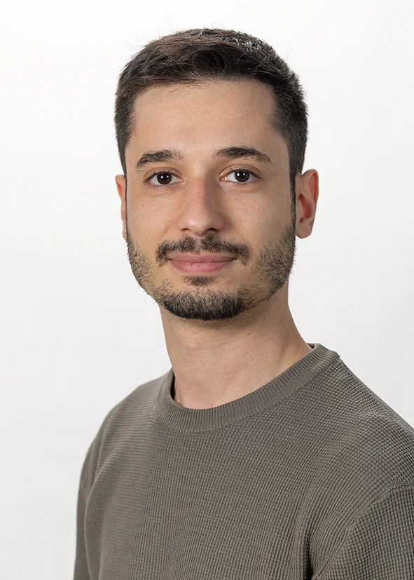
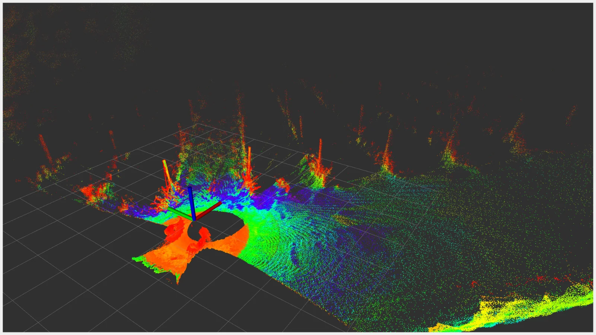
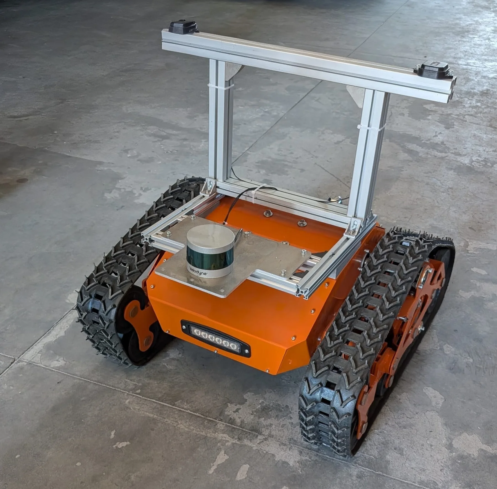
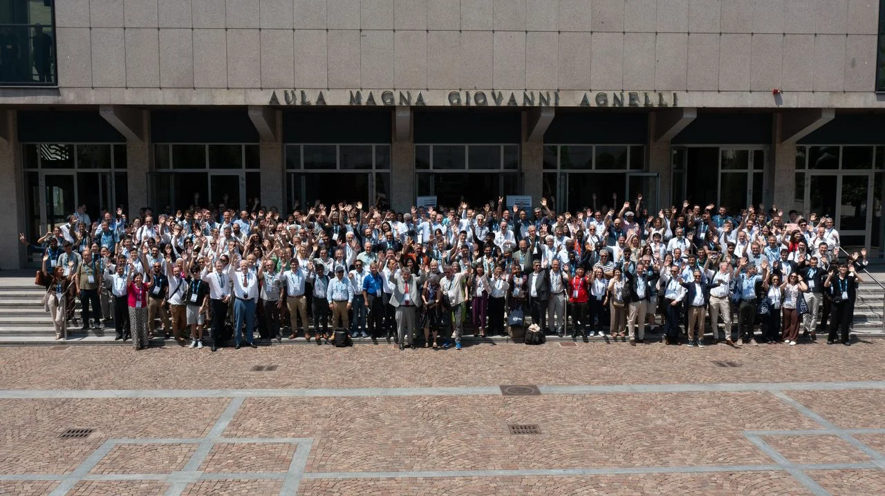
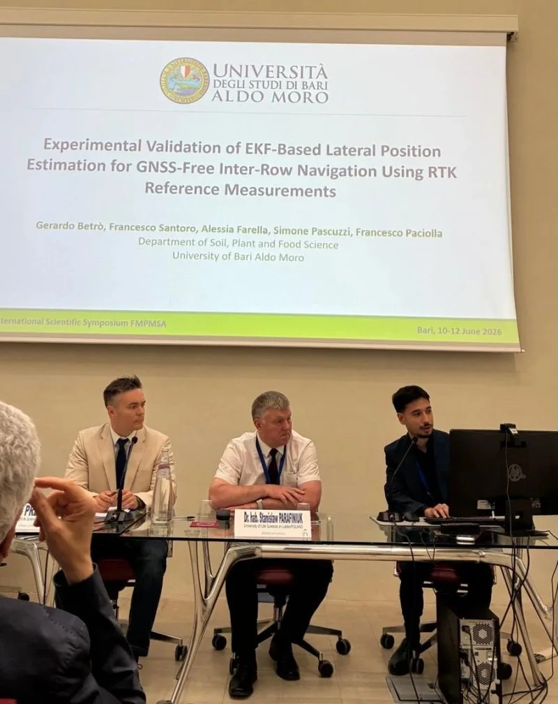
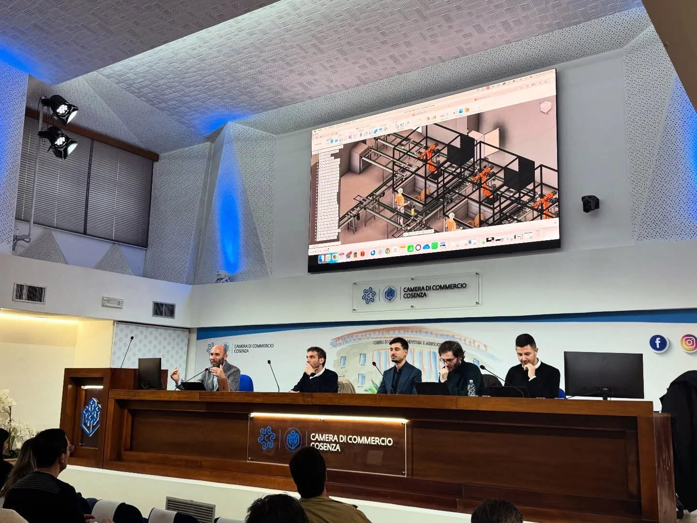
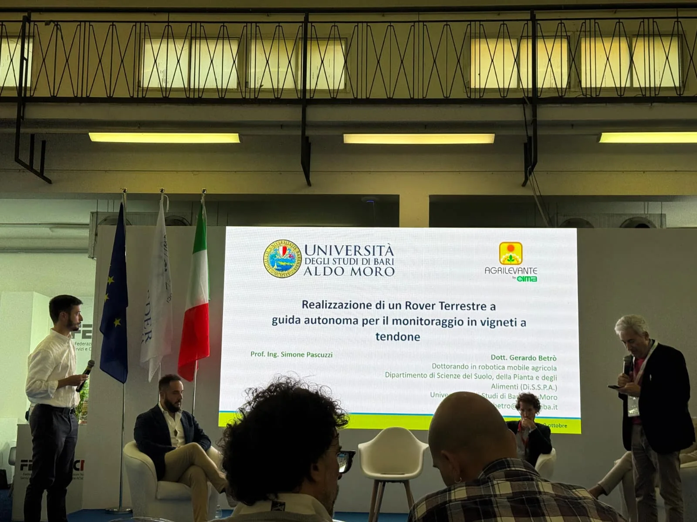

Visiting PhD Researcher
Agricultural University of Athens · GNSS-free navigation research with Clearpath Husky A200.
PhD researcher in autonomous mobile robotics, working on navigation software, LiDAR perception and robotic system integration.
University of Bari Aldo Moro · Italy

Agricultural University of Athens · GNSS-free navigation research with Clearpath Husky A200.
ROS 2 navigation software, system integration, interfaces and testing.
Precision agriculture and Agriculture 4.0.
University of Bari Aldo Moro · Agricultural mobile robotics.
University of Calabria.
University of Calabria.
LiDAR row perception, adaptive trajectory generation and terrain assessment on Husky A200.

LiDAR- and RANSAC-based navigation using a HYLE Rover platform. Paper ↗

Navigation, rover control, HMI, sensor integration, mechanical assembly and testing.
Published · Smart Agricultural Technology · DOI ↗
FMPMSA, Bari · First author and presenter · Springer proceedings forthcoming.
CIGR–EurAgEng, Turin · First author and presenter · Proceedings under review.

First-author presentation on geometric and inertial yaw-rate estimates.

First author, presenter and Organizing Committee member · EKF-based lateral position estimation.

Robotics and intelligent systems event, representing CLOR Industry.

Presentation of the DISSPABOT rover for vineyard monitoring.